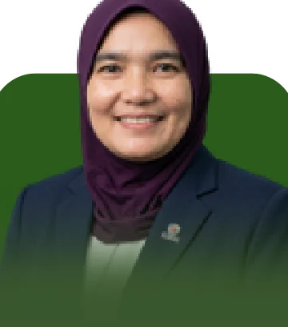
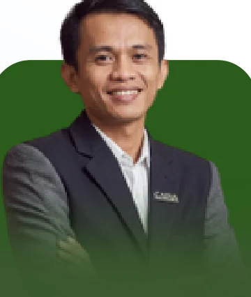
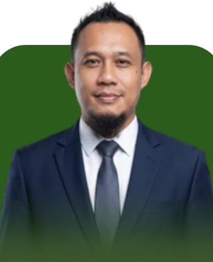
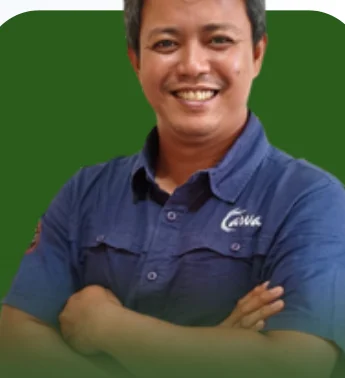
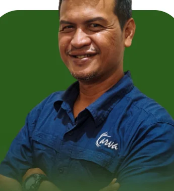
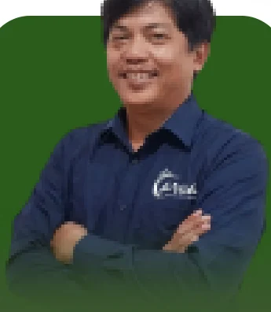

Rivanny Fithri, S.Hut., M.Si.CommissionerKomisaris
A compact management line, backed by 25 experts across 15 fields — from forest carbon and microbiology to GIS, drone mapping, social and financial analysis.Jajaran manajemen yang ringkas, disokong 25 tenaga ahli pada 15 bidang — dari karbon hutan dan mikrobiologi hingga GIS, pemetaan drone, sosial, dan keuangan.






The 2026 edition covers our legal data, certification, organisation, expert team, all 46 assignments and field documentation.Edisi 2026 memuat data legal, sertifikasi, struktur organisasi, tim ahli, seluruh 46 penugasan, dan dokumentasi lapangan.